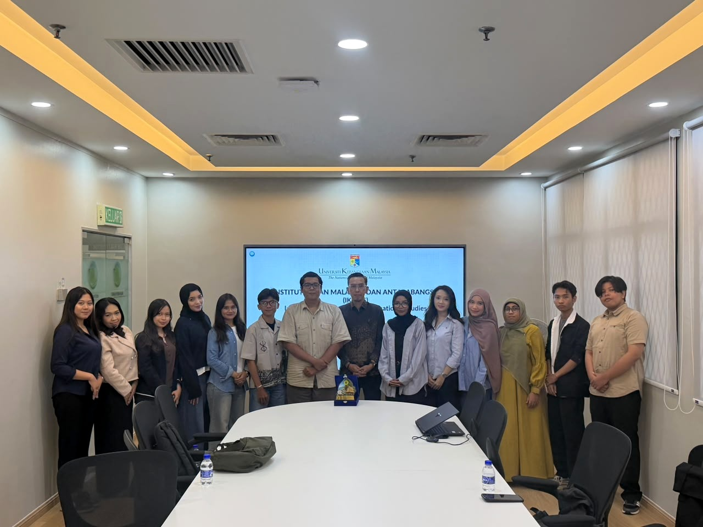
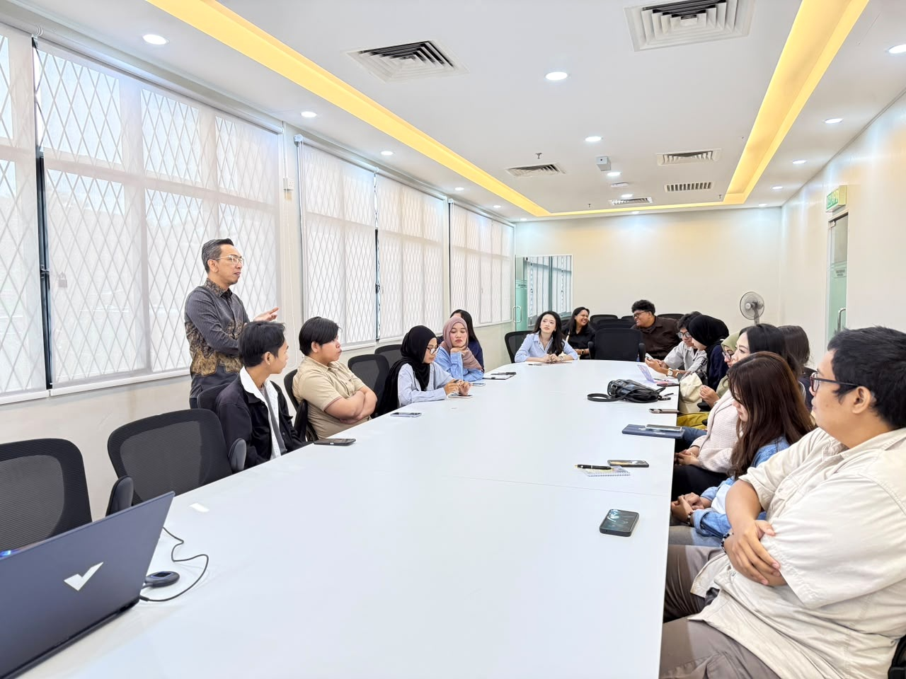
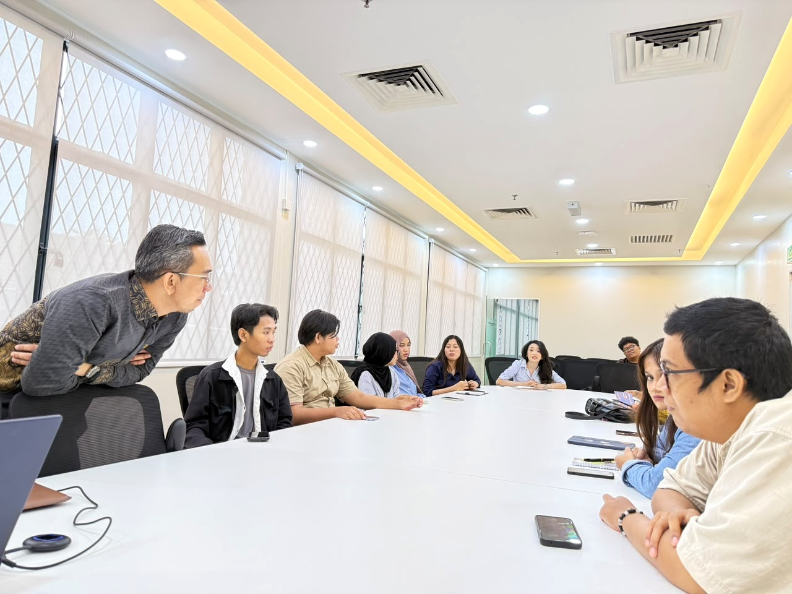
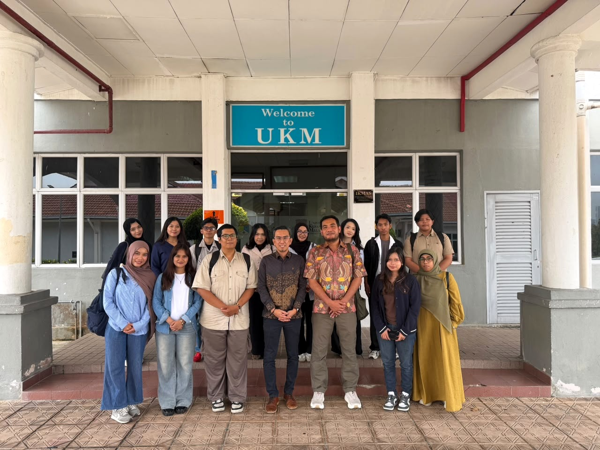
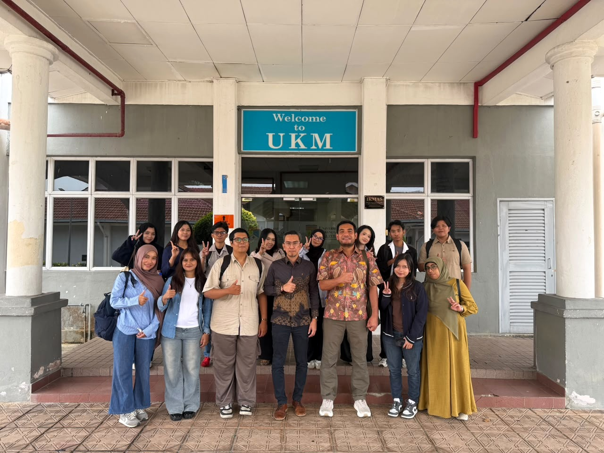
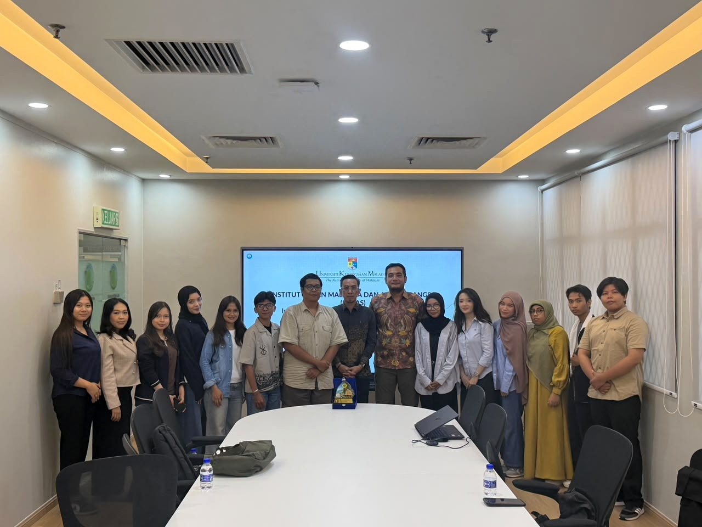
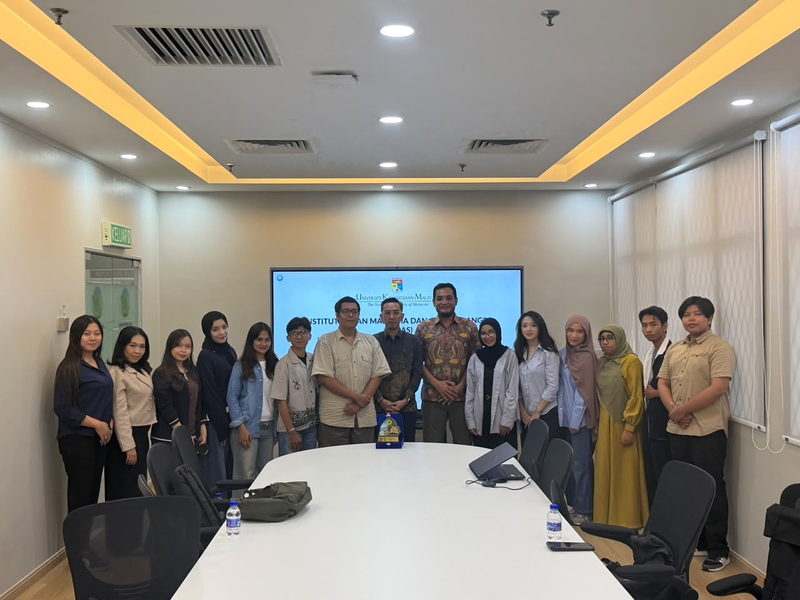
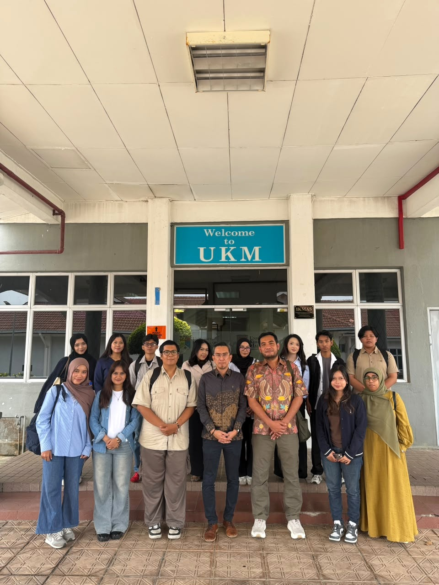
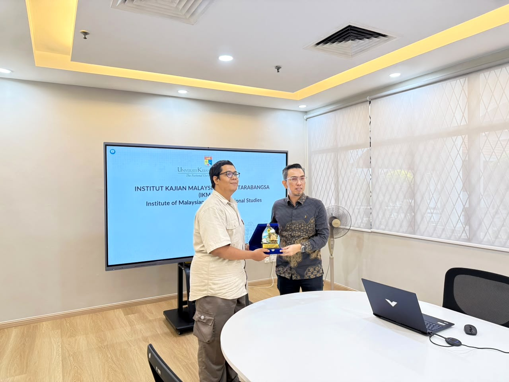
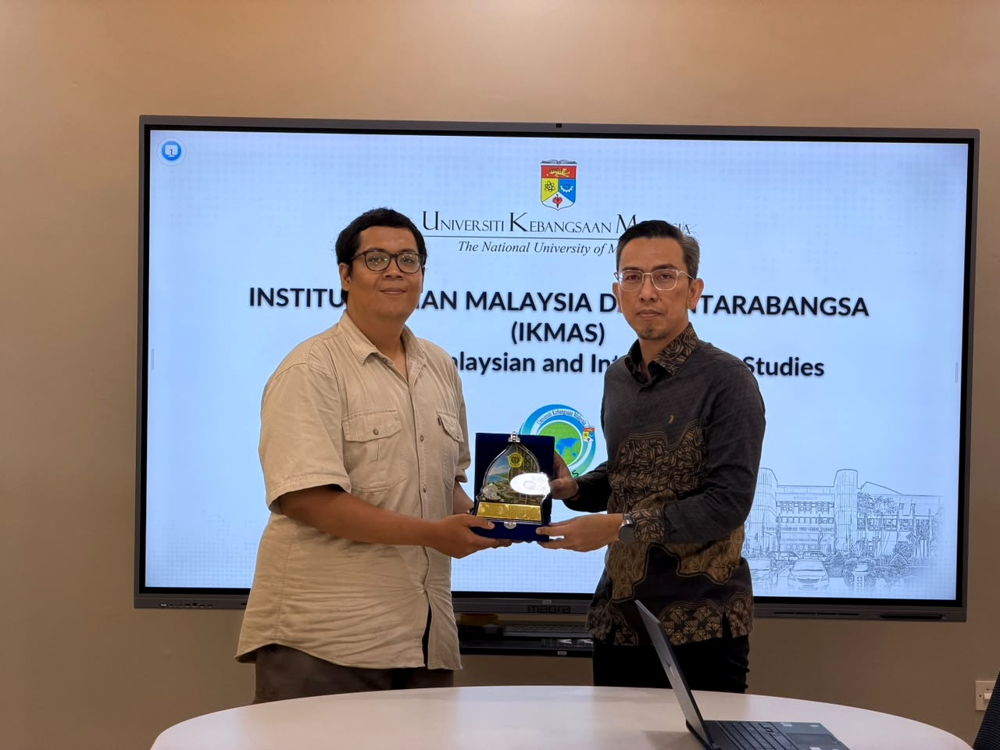

Galeri & Log Kegiatan
Dokumentasi kegiatan MDIP
Rangkaian dokumentasi kunjungan dan dialog akademik MDIP di Universiti Kebangsaan Malaysia.










Mitra Kelembagaan
Institusi yang mendukung MDIP 2026
Universiti Kebangsaan Malaysia
IOM
PERTIMIG
North South Initiative
KBRI Kuala Lumpur